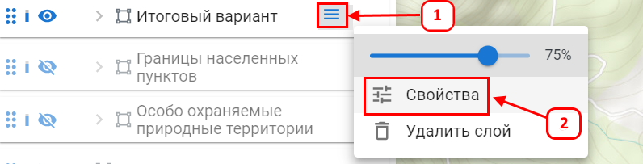

Фоторежим предназначен для просмотра результатов фотофиксации при проколе или выделении, одного или множества объектов.
Для активации фоторежима необходимо выполнить следующие шаги:

После выполненных действий при проколе объектов на карте, сначала будут отображаться результаты фотофиксации.